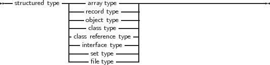

A structured type is a type that can hold multiple values in one variable. Structured types can be nested to unlimited levels.
_________________________________________________________________________________________________________
Structured Types

___________________________________________________________________
Unlike Delphi, Free Pascal does not support the keyword Packed for all structured types. In the following sections each of the possible structured types is discussed. It will be mentioned when a type supports the packed keyword.
When a structured type is declared, no assumptions should be made about the internal position of the elements in the type. The compiler will lay out the elements of the structure in memory as it thinks will be most suitable. That is, the order of the elements will be kept, but the location of the elements are not guaranteed, and is partially governed by the $PACKRECORDS directive (this directive is explained in the Programmer’s Guide).
However, Free Pascal allows controlling the layout with the Packed and Bitpacked keywords. The meaning of these words depends on the context:
Packing on byte boundaries means that each new element of a structured type starts on a byte boundary.
The byte packing mechanism is simple: the compiler aligns each element of the structure on the first available byte boundary, even if the size of the previous element (small enumerated types, subrange types) is less than a byte.
When using the bit packing mechanism, the compiler calculates for each ordinal type how many bits are needed to store it. The next ordinal type is then stored on the next free bit. Non-ordinal types - which include but are not limited to - sets, floats, strings, (bitpacked) records, (bitpacked) arrays, pointers, classes, objects, and procedural variables, are stored on the first available byte boundary.
Note that the internals of the bitpacking are opaque: they can change at any time in the future. What is more: the internal packing depends on the endianness of the platform for which the compilation is done, and no conversion between platforms are possible. This makes bitpacked structures unsuitable for storing on disk or transport over networks. The format is however the same as the one used by the GNU Pascal Compiler, and the Free Pascal team aims to retain this compatibility in the future.
There are some more restrictions to elements of bitpacked structures:
To determine the size of an element in a bitpacked structure, there is the BitSizeOf function. It returns the size - in bits - of the element. For other types or elements of structures which are not bitpacked, this will simply return the size in bytes multiplied by 8, i.e., the return value is then the same as 8*SizeOf.
The size of bitpacked records and arrays is limited:
The reason is that the offset of an element must be calculated with the maximum integer size of the system.